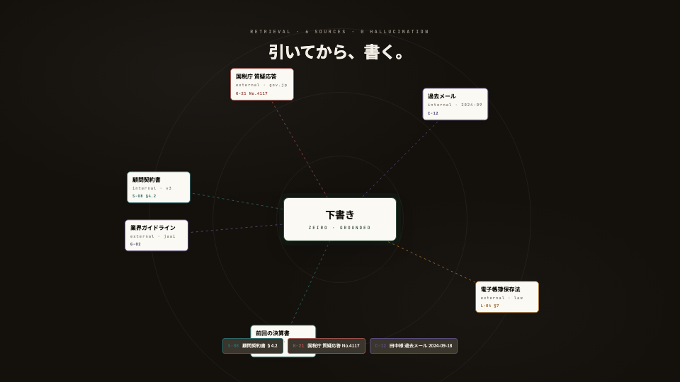
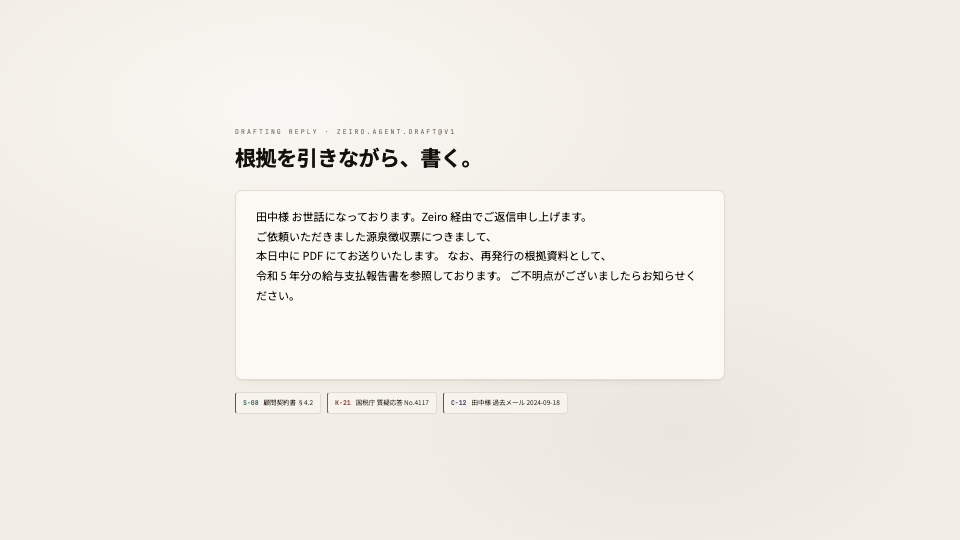
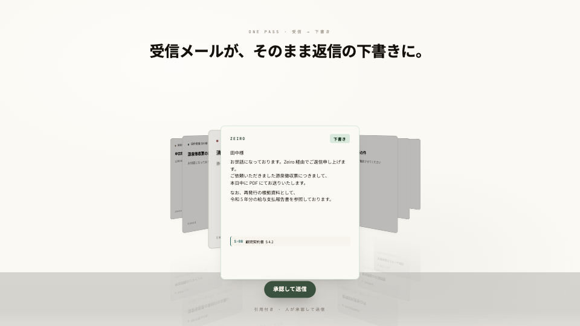
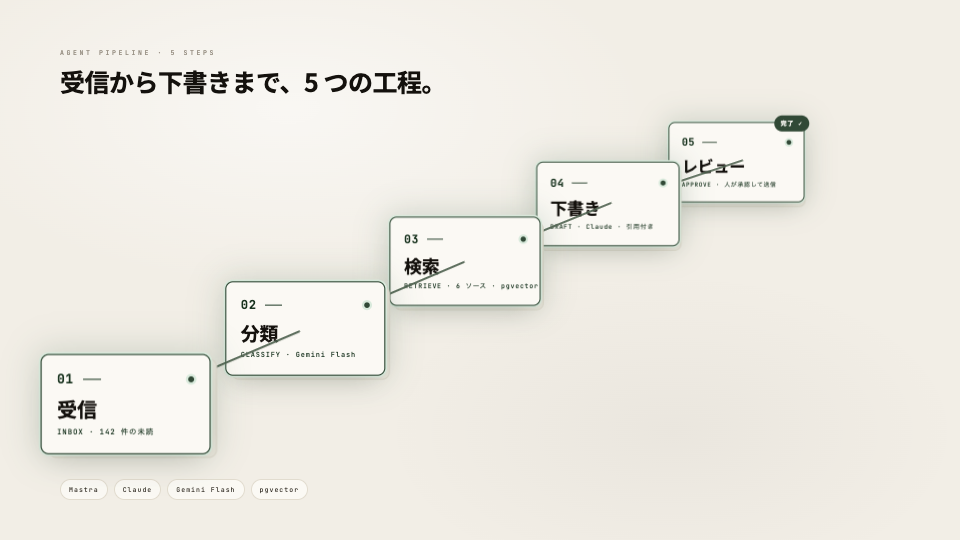
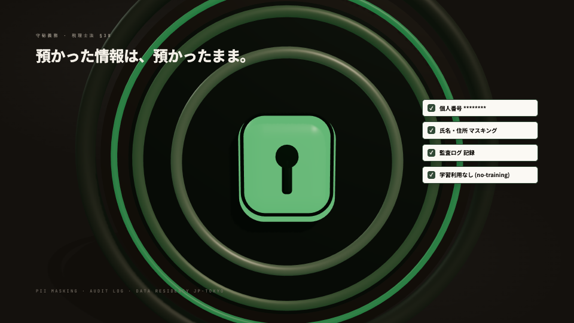

CLASSIFY · GEMINI FLASH
届いた瞬間、5つに仕分ける。
受信トレイは放っておけば積み上がる。Zeiro は届いたメールを 期日確認・書類提出・税務質問・顧問契約・その他 の5レーンへ自動で振り分け、判断を要する一件を浮かび上がらせる。
期日確認Deadline0
書類提出Document0
税務質問Tax0
顧問契約Contract0
その他Other0
RETRIEVAL · 6 SOURCES · 0 HALLUCINATION
引いてから、書く。

下書き
ZEIRO · GROUNDED
顧問契約書
internal · v2
S-08 §4.2
国税庁 質疑応答
external · gov.jp
K-21 No.4117
田中様 過去メール
internal · 2024-09
C-12
業務ガイドライン
internal · janl
G-03
電子帳簿保存法
external · law
L-04 §7
前回の決算書
internal · FY2023
D-09
田中商事「源泉徴収票」 → 6件のソースを照合 → 引用元を確定
DRAFTING REPLY · ZEIRO.AGENT.DRAFT@V1
根拠を引きながら、書く。

S-08顧問契約書 §4.2
K-21国税庁 質疑応答 No.4117
C-12田中様 過去メール 2024-09-18
ONE PASS · 受信 → 下書き
受信メールが、そのまま返信の下書きに。

引用付き · 人が承認して送信
AGENT PIPELINE · 5 STEPS
受信から下書きまで、5つの工程。

01
受信
INBOX · 142 件の未読
02
分類
CLASSIFY · Gemini Flash
03
検索
RETRIEVE · 6 ソース · pgvector
04
下書き
DRAFT · Claude · 引用付き
05
レビュー
APPROVE · 人が承認して送信
完了 ✓
MastraClaudeGemini Flashpgvector
THE NUMBERS · 月次
数字で見る、Zeiro。事務所あたりの平均値 · 直近38日
返信件数 · REPLIES / MO
0件 / 月
税務512
書類388
期日221
契約126
1通あたり · PER MESSAGE
従来0分
Zeiro0秒
−97%所要時間
週次 未読推移 · UNREAD / WK
AUTO-DRAFTED
0%
自動下書き率
HOURS SAVED
0h/年
削減時間
REVIEW NEEDED
0%
レビュー必要 100%→約32%
ESCALATION · 信頼度 < 0.75
本当に判断が要る一件だけ、税理士へ。
税務判断を要する質問・信頼度 0.75 未満・「至急 / クレーム / 税務調査」を含む案件は、税理士レビューを必須化する。残りは下書きのまま、数十秒で。
エスカレーション率
約32%
AUDIT LOG · 全件
監査ログ
誰が・いつ・どのモデルで・どの引用に基づいて送ったかを全件記録。後から必ず辿れる。
守秘義務 · 税理士法 §38
My Number は受信時にマスク
jp-tokyo データレジデンシー。学習しない契約のLLMのみ利用。受信値にカーソルを合わせると、自動マスクの動きを確認できる。

受信メール（生）
•••• •••• 0000
Zeiro 保存値
•••• •••• ••••
My Number は保存・LLM送信の前にマスクされます。受信した時点で末尾以外を伏せ、保存値は完全マスク。原本は保持しません。